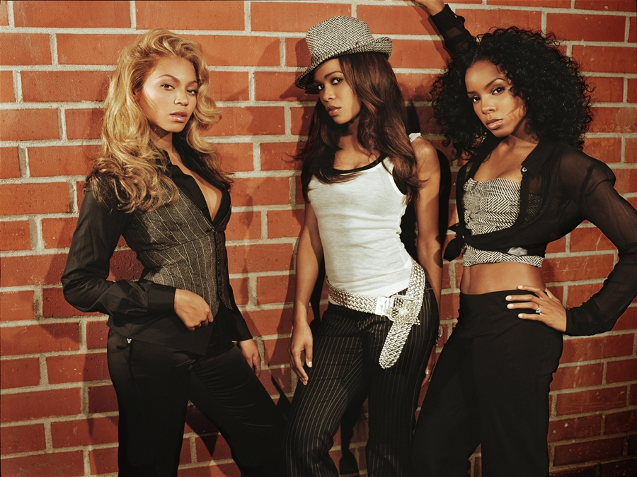
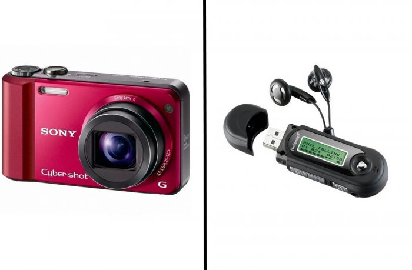
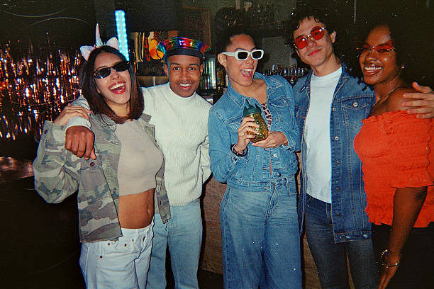
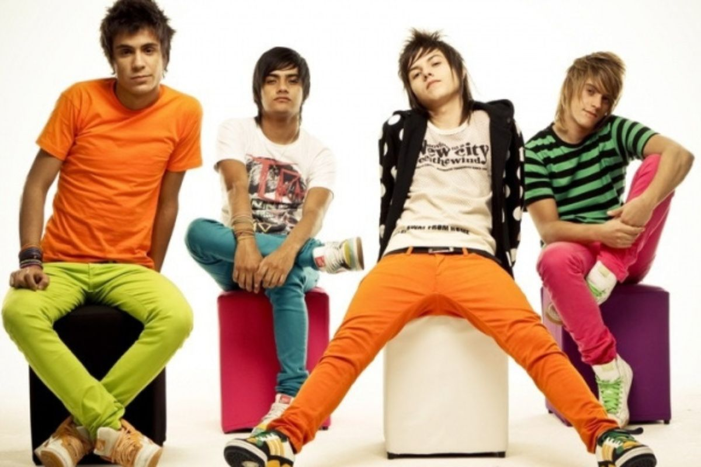

- Britney Spears
- Beyoncé
- Eminem
- Black Eyed Peas
- Linkin Park
Nesse site, vamos falar sobre a década mais famosa, anos 2000. Ela é conhecida pela moda e por suas músicas. O estilo se popularizou por conta de suas estampas exageradas, calças de cintura baixa, acessórios chamativos e o excesso de cinto. É um período que marcou também por seu avanço tecnológico, culturais e acontecimentos importantes no mundo.

A música da década, foi marcado pela diversidade de estilos e pelo crescimento da música digital. Nessa época, as pessoas começaram a baixar músicas pela internet e a usar aparelhos MP3 para ouvi-las.
Ivete Sangalo; Claudia Leitte; Charlie Bronw Jr.; Jorge & Mateus; NZ zero
A tecnologia transformou completamente a forma de ouvir música. Os CDs ainda eram populares, mas os aparelhos MP3 começaram a dominar o mercado, permitindo que as pessoas armazenassem centenas de músicas em um único dispositivo portátil. A internet teve um papel fundamental nessa mudança. Muitos usuários passaram a baixar músicas e compartilhar arquivos digitais, tornando o acesso às canções mais rápido e ampliando a divulgação de artistas em todo o mundo.
A música além das rádios Os videoclipes ganharam ainda mais importância nos anos 2000. Eles eram exibidos em canais de televisão e também começaram a ser assistidos pela internet, ajudando artistas a fortalecer sua imagem e alcançar novos públicos.

Os festivais e shows atraíam milhares de pessoas. Grandes eventos musicais reuniam artistas nacionais e internacionais, proporcionando experiências marcantes para os fãs e movimentando a indústria do entretenimento. A música também influenciou a moda da época. Roupas coloridas, acessórios chamativos, bonés, pulseiras e penteados inspirados em cantores e bandas eram comuns entre adolescentes e jovens, mostrando a forte ligação entre música e comportamento.

A música dos anos 2000 teve grande influência na vida dos jovens, servindo como forma de expressão, diversão e identificação. Muitas pessoas acompanhavam seus artistas favoritos, decoravam letras de músicas e compartilhavam seus gostos musicais com amigos. Além disso, a música estava presente em festas, escolas, programas de televisão e redes sociais, tornando-se uma parte importante da cultura da época e ajudando a construir memórias que permanecem vivas até hoje.
Além do entretenimento, muitas músicas abordavam temas sociais, emocionais e culturais. As letras falavam sobre amizade, amor, superação, sonhos e desafios do cotidiano, criando uma conexão especial entre os artistas e o público.
O marco da música contemporânea A década de 2000 foi um período de inovação e transformação para a música. O surgimento de novas tecnologias, a popularização da internet e a variedade de estilos musicais fizeram dessa época um marco importante na história da cultura contemporânea, deixando um legado que continua influenciando artistas e ouvintes até os dias atuais.

Clique nas cartas e descubra curiosidades!

Britney Spears ficou conhecida como a Princesa do Pop e lançou sucessos que marcaram os anos 2000, como Toxic!
✦ Clique para voltar ✦
Avril Lavigne se tornou um ícone do pop punk nos anos 2000, influenciando a moda adolescente com gravatas, tênis e roupas de estilo skatista!
✦ Clique para voltar ✦
Paris Hilton foi uma das maiores referências da moda Y2K, popularizando looks com brilho, acessórios chamativos e bolsas pequenas!
✦ Clique para voltar ✦